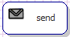
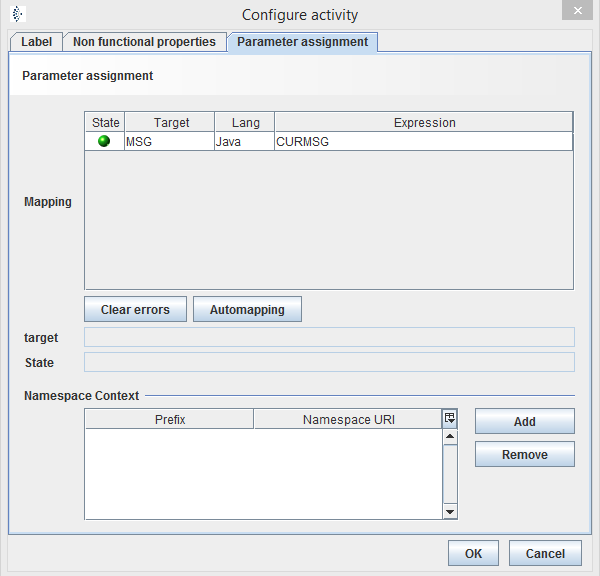

Send

Topic content
Description
The activity send allows to call an outbound channel. The call is asynchronous, which means the process defined in process model is going on, while the execution of the outbound is not done yet and there needn't be any data received from channel for further procedures.
Purpose of object
It enables a better performance because of its asynchronous processing. A synchronous processing can be done by activity call.
Create
1. Create a process model
2.Then point the mouse on "process", as default, this window is on the right side of the Orchestra window.
3.Click on the folder activities to see its content.
4.Click on "Send".
5.Click on any place in your process model.
6.Integrate it in process schedule, by clicking on the send icon and drag and drop the arrow to the to be connected item.
7.Connect it with outbound channel by clicking on the send icon and drag and drop the arrow to the intended channel. A dashed arrow should appear.
Icon

Configuration
Label and Non functional properties
See at common configurations for activities.
Parameter assignment
In this section you define the parameter, which should be delivered to the channel. Similar to a function call with parameters, may a channel also need some parameters to execute:

In table you can see the required parameters to execute the channel call. The parameters depend on the channels configurations. Most of the channels expects a Orchestra message, which is preallocated with the current message(CURMSG). But some of them have additional base parameters, e.g. Channel File Writer expects a filepath of type string. In some channels, e. g. Java Outbound channel, it is possible to declare additional input parameter, which means you have to fill them in parameter assignment, too.
A parameter has following values:
oState: The state shows whether the assignment is correct. In field state below the mapping table a short description is given. There are three states:
▪Green: Correct input
▪Warning: Assignment is not correct
▪Error: Something is wrong with the variable-
oTarget: The variable name of the parameter in target.
oLang: The programming language of expression. This can be either Java or XPath.
oExpression: The variable, function or value, which will be assigned to target variable. To have an overview of possible values right-click on expression field, to see a choice of possible content. You can insert:
▪A variable from source, e.g. CURMSG or MSG

▪A value, e.g. string, integer or Boolean

▪A value generated out of a java function:
• A Boolean value, whether mass data option is selected for current message

•String value, which includes the name of scenario.

•See a selection of the Orchestra generated Java functions here.
▪A value generated out of XPATH expression using the XPath Editor.
If you choose one single record you can see additional information in fields target and State.
gives information about the target type: variable name <data type>, short description of intended value
In field you can see problems and mismatches. In case of a error the text contains the error message. If everything is alright it just says "OK".
The button automatically clears wrong connection and maps values with same name.
Button refreshes the view of parameter. It could be possible that some target values have been changed. With clear errors reloads Orchestra the parameters to actual state.
In field you can add or remove namespaces for Xpath expressions. This is commonly used and filled automatically, if you declare a XPath. The namespace URI of the selected record gets a prefix for potential later use.